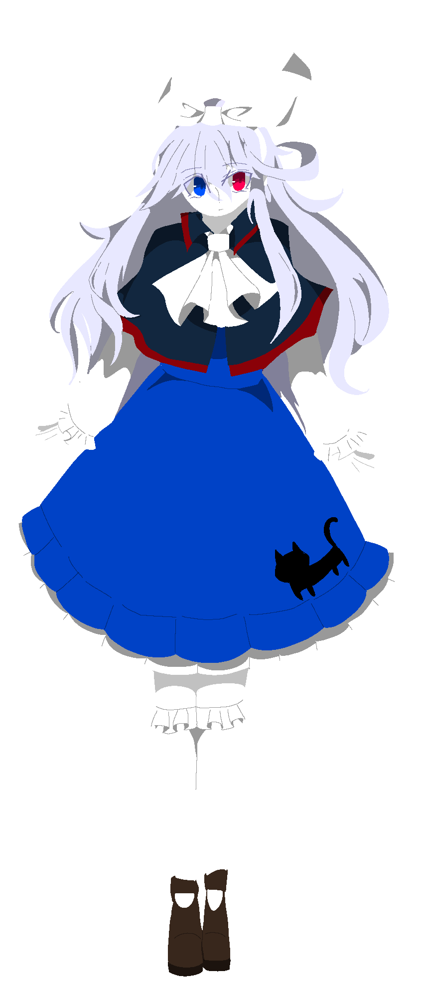
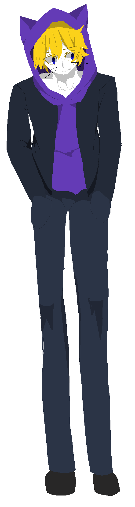
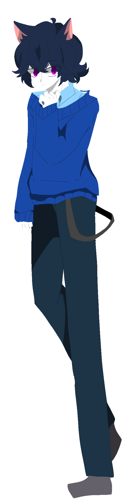

気がつけば森にある洋館の目の前に立っていたリリス。しかし彼女は名前すら覚えていない記憶喪失の少女だった。
彼女は日が暮れかけていることから目の前の洋館に入るが、彼女はその洋館の幽霊に命を狙われる。一方で、リリスについて何か知っていそうなチェシャやルークに遭遇し、彼女は混乱していく。
洋館の女幽霊とリリスたちの消えた記憶を紡ぐ一夜が始まる・・・
▼
友達がいなかった少女の話
気がつけば森にある洋館の目の前に立っていたリリス。しかし彼女は名前すら覚えていない記憶喪失の少女だった。
彼女は日が暮れかけていることから目の前の洋館に入るが、彼女はその洋館の幽霊に命を狙われる。一方で、リリスについて何か知っていそうなチェシャやルークに遭遇し、彼女は混乱していく。
洋館の女幽霊とリリスたちの消えた記憶を紡ぐ一夜が始まる・・・


